検証画像とmaskの見比べ
まず完成結果、その後にmaskの理由を確認できます。クリックで原寸画像、比較シートはPNGとして保存できます。
顔は別seedの4条件でも保持。重なりseed123は左肩後方に白い残片があり要注意。背景・部位には課題が残るため既定採用は保留です。
全条件：Slider +4、1024×1024、8 steps、CFG1。既存の検証結果のみを使用。新しいdiffusion生成は0 NFE。
1. base-only＋R0の完成結果：6条件
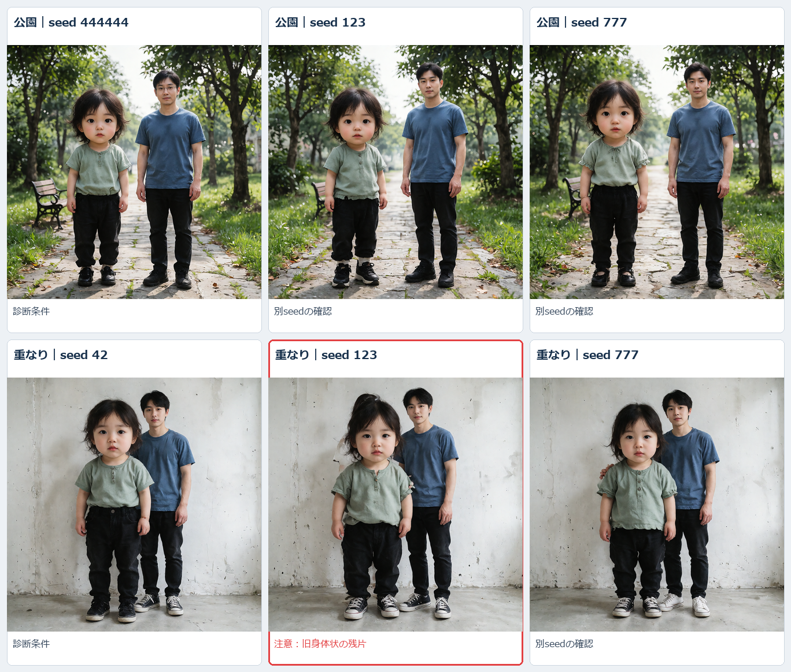
顔だけを拡大した6条件の比較
公園｜seed 444444

診断条件
公園｜seed 123

別seedの確認
公園｜seed 777

別seedの確認
重なり｜seed 42

診断条件
重なり｜seed 123

注意：旧身体状の残片
重なり｜seed 777

別seedの確認
2. 完成画像に使った実効mask
最終targetは、同じpilot入力のbase／Slider対象支持を合わせ、固定保護を引いたものです。
緑：編集対象（Slider予測を使う）
青：固定保護
灰：その他（正解背景とは限らない）
赤：raw対象と固定保護の衝突
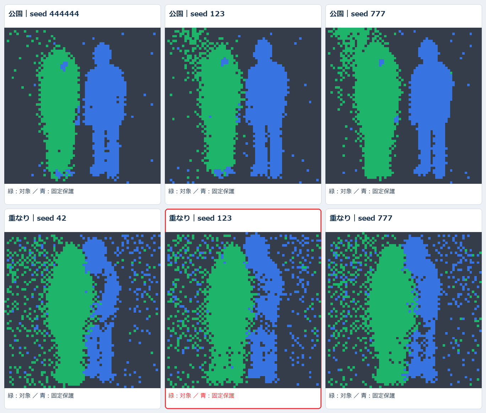
overlayの参照RGBはpilotのstep3予測です。maskを選んだ入力と位置を揃えて表示しています。完成画像を人物segmentationした正解maskではありません。
D/Aとbase／Sliderの位置を揃えて見る
公園：同じmaskを両branchのRGBに重ねる
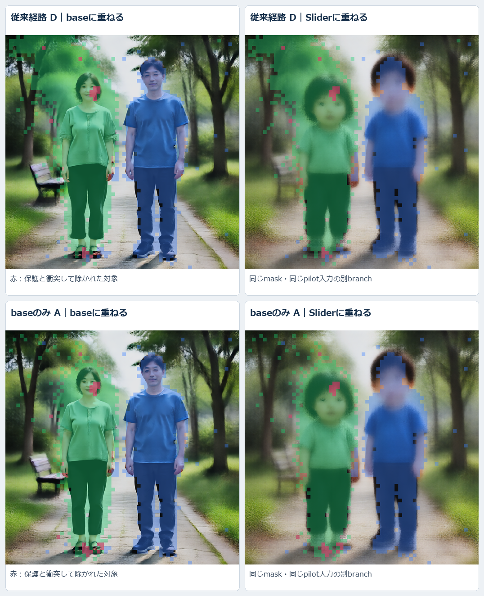
重なり：同じmaskを両branchのRGBに重ねる
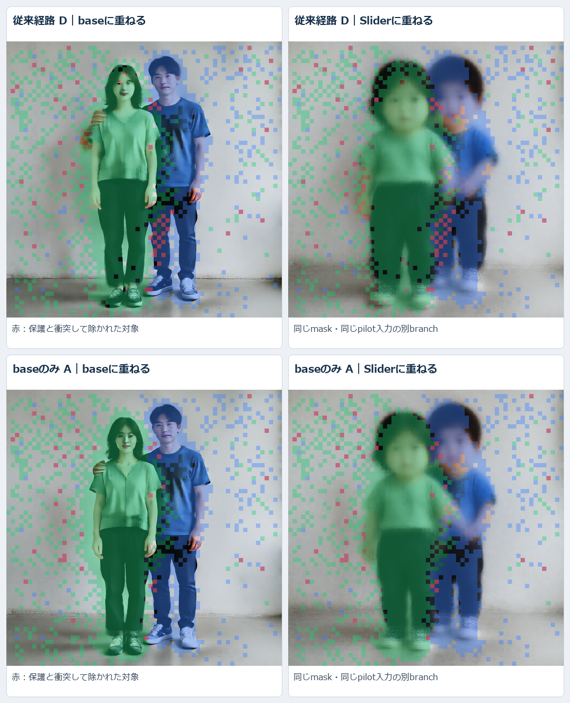
実効maskを作る流れ：base-only経路 A
上段はbase／Sliderの対象支持と和集合、下段は固定保護・衝突・保護減算後の実効対象です。赤い衝突セルは⑥から除かれます。
公園：raw対象 → 保護減算 → 実効対象
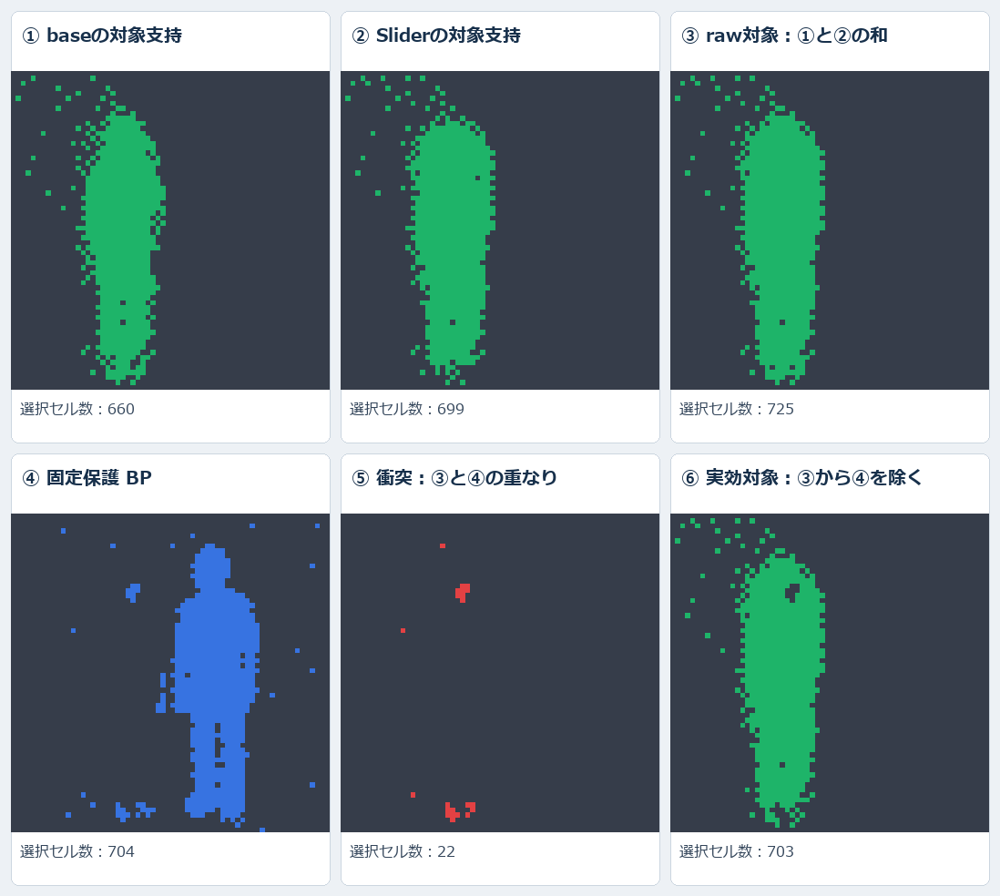
重なり：raw対象 → 保護減算 → 実効対象
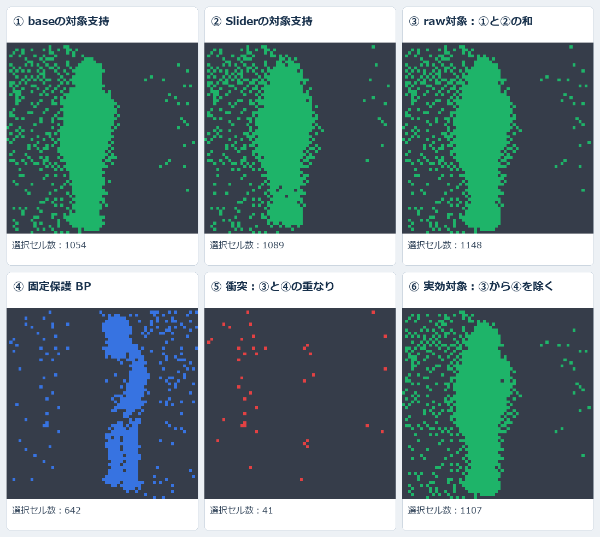
4. R0〜R4：顔の分類がどう変わるか
同じD pilotの途中予測を、5方式のraw分類で比較します。これは完成画像の比較ではありません。上段base、下段Slider。青い顔領域は「保護役割への誤割当」、黄色は未確定です。
R0：全seed固定 ／ R1：固定なし ／ R2：最大9固定 ／ R3：prototype poolをbase支持で絞る・固定なし ／ R4：同じpool絞り込み＋R2と同じ固定。
緑＝対象、青＝保護役割に分類、黄色＝未確定。R1〜R4の完成画像は選定条件不成立のため生成していません。
公園：顔の周囲だけ拡大
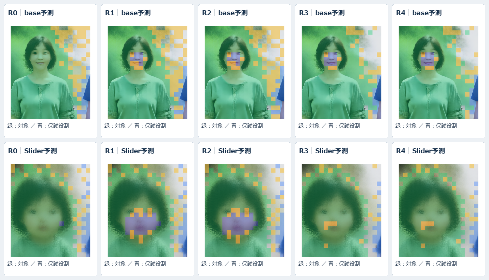
重なり：顔の周囲だけ拡大
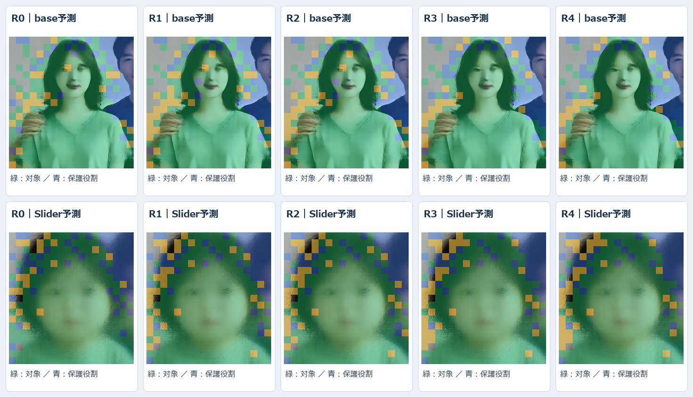
5. 公園：固定保護の1セルだけ解除
同じD-R0のtargetを1セル増やし、protectedを同じ1セルだけ減らした診断対照です。
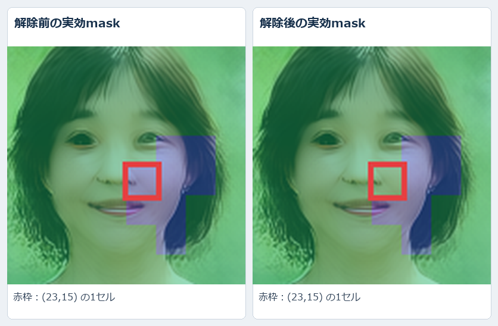
base顔の確認済み内部セルは8/9→9/9。これは疎な9セルのlabelだけの数値で、顔全体の解除ではありません。解除後も他の青い部分は保護されたままです。完成顔は解除なしでも保持され、明瞭な追加改善は未確認です。
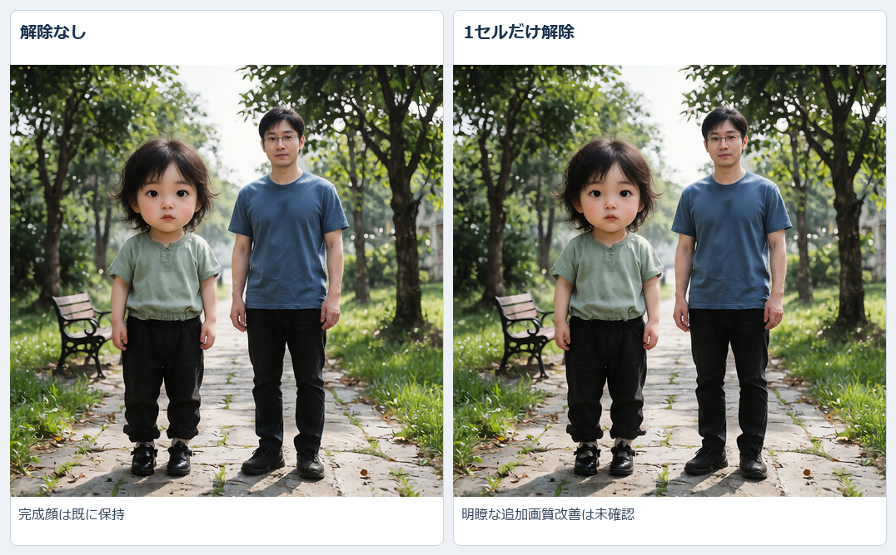
6. 要注意：重なりseed123の白い残片
2つの頭部は保たれていますが、左肩後方に旧身体状の白い残片が残りました。人数・残像gateは不合格、接触境界の保護は判定不能です。
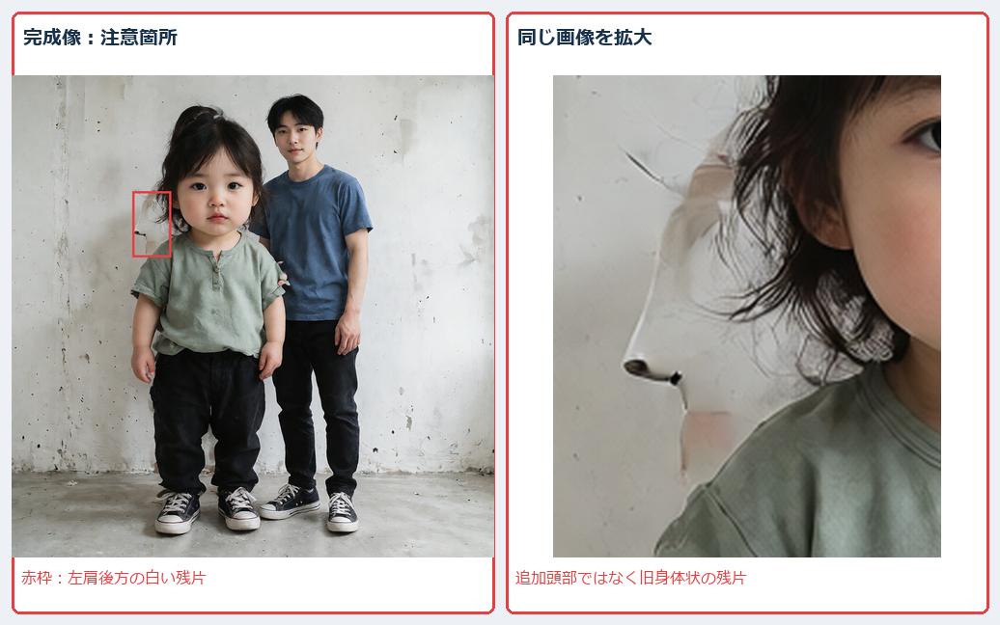
7. 完成画像17枚の全一覧
先頭の6条件と重複する画像も含め、実際に生成した全画像をphase別に掲載しています。
公園 seed 444444｜A
初期maskによる比較元

公園 seed 444444｜D
初期maskによる比較元

公園 seed 444444｜D-R0
1セル解除の診断

公園 seed 444444｜A-R0
再分類maskによる生成
公園 seed 444444｜D-R0
再分類maskによる生成

重なり seed 42｜A
初期maskによる比較元

重なり seed 42｜D
初期maskによる比較元

重なり seed 42｜A-R0
再分類maskによる生成
重なり seed 42｜D-R0
再分類maskによる生成

公園 seed 123｜A
初期maskによる比較元

公園 seed 123｜A-R0
再分類maskによる生成
公園 seed 777｜A
初期maskによる比較元

公園 seed 777｜A-R0
再分類maskによる生成
重なり seed 123｜A
初期maskによる比較元

重なり seed 123｜A-R0
再分類maskによる生成
重なり seed 777｜A
初期maskによる比較元

重なり seed 777｜A-R0
再分類maskによる生成
目視所見・部位annotationはassistant、human_verified=false。全身精度や保護人物の画素完全保持を示すものではありません。詳しい数値レポート ／ 検証JSON